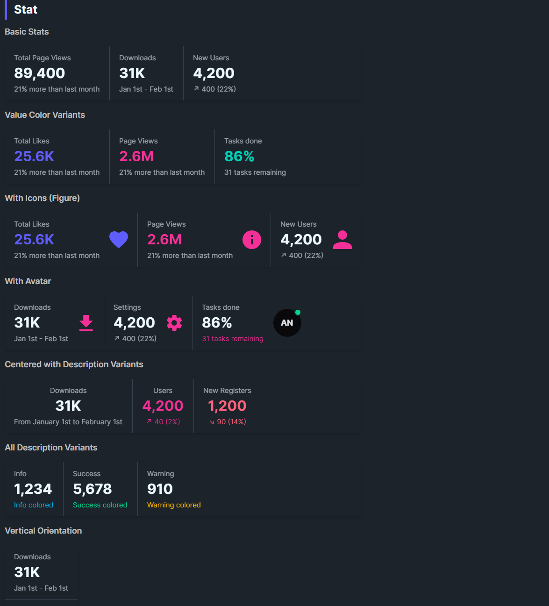

DaisyStat displays a metric with title, value, optional description, figure (icon/media), and action slot. DaisyStats groups multiple stats horizontally or vertically, adding separators between items. Variants color the value text; DescriptionVariant colors the description independently.
| Property | Description |
|---|---|
Title |
Small label above the value. |
Value |
Main metric (large text). |
Description |
Secondary text below the value. |
Figure |
Optional leading visual (icon, image). |
Actions |
Optional trailing actions (e.g., buttons). |
IsCentered |
Centers text and actions within the stat. |
Variant |
Colors value text (Default/Primary/Secondary/Accent/Info/Success/Warning/Error). |
DescriptionVariant |
Colors description text using the same variant set. |
| Property | Description |
|---|---|
Orientation |
Horizontal (default) or Vertical; adds dividers between items. |
<!-- Simple stats -->
<controls:DaisyStats>
<controls:DaisyStat Title="Total Page Views" Value="89,400" Description="21% more than last month" />
<controls:DaisyStat Title="Downloads" Value="31K" Description="Jan 1st - Feb 1st" Variant="Primary" />
<controls:DaisyStat Title="New Users" Value="4,200" Description="+400 (22%)" Variant="Secondary" />
</controls:DaisyStats>
<!-- With figure and actions -->
<controls:DaisyStat Title="Account balance" Value="$89,400">
<controls:DaisyStat.Figure>
<PathIcon Data="{StaticResource DaisyIconStar}" Width="32" Height="32"
Foreground="{ThemeResource DaisyWarningBrush}" />
</controls:DaisyStat.Figure>
<controls:DaisyStat.Actions>
<controls:DaisyButton Size="ExtraSmall" Variant="Success" Content="Add funds" />
</controls:DaisyStat.Actions>
</controls:DaisyStat>
<!-- Vertical grouping and centered -->
<controls:DaisyStats Orientation="Vertical">
<controls:DaisyStat Title="Downloads" Value="31K" Description="Jan 1st - Feb 1st" IsCentered="True" />
<controls:DaisyStat Title="Users" Value="4,200" Description="+40 (2%)" Variant="Secondary" DescriptionVariant="Secondary" IsCentered="True" />
</controls:DaisyStats>DescriptionVariant to align secondary text with status (e.g., Success for growth, Error for decline).IsCentered=True) when presenting small sets or when values/figures need emphasis.Orientation="Vertical" and ensure consistent padding for readability.Figure to add meaning without overloading text.